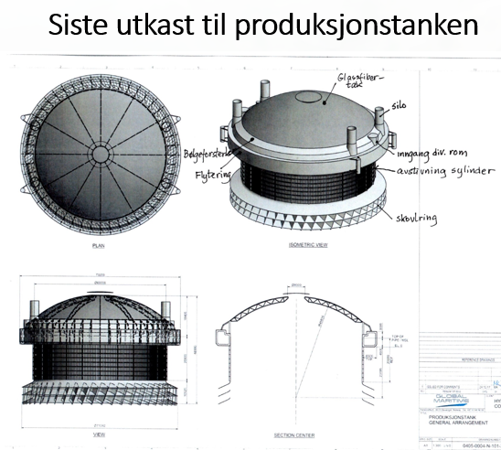

LøsningenThe solution
Enkel. Robust.
Fremtidssikker.
Simple. Robust.
Future-proof.
En lukket eller semilukket merd i termoplast (PE100), designet fra grunnen av for å løse industriens største utfordringer. Lett å bygge, billig å drifte, laget for å vare. A closed or semi-closed enclosure in thermoplastic (PE100), designed from the ground up to solve the industry's biggest challenges. Easy to build, inexpensive to operate, built to last.
Ingen nye konsesjoner nødvendig. Folkemerden kan benyttes på eksisterende tillatelser. Designet og sveist etter NS9415 og NS 416. No new permits required. Folkemerden can be used with existing licenses. Designed and welded to NS9415 and NS 416.



Lukket variant (øverst) og semilukket variant (nedre venstre) Closed variant (top) and semi-closed variant (lower left)